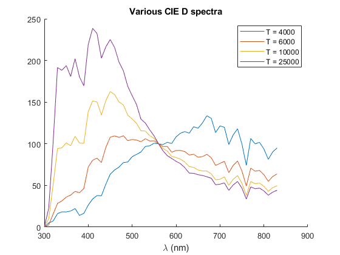
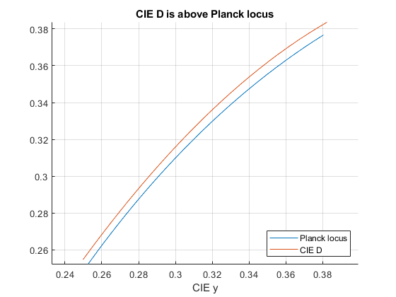

CIE_Illuminant_D
Navigate to: Home | Alphabetic list | Grouped list | Source code: CIE_Illuminant_D.m
Computes CIE standard illuminant D (daylight) for a desired color temperature
Contents
Syntax
rv = CIE_Illuminant_D(CCT,varargin)
Input Arguments
- CCT: scalar double. Correlated color temperature. 4000 <= CCT <= 25000, else error
- varargin: Name-value pairs: 'lam',lam where lam is a valid wavelength range (strictly ascending vector of positive double| Default is 360:830. 'enforceCCTrange', yesno where yesno is logical scalar; when false, CCT may be outside the 4000 <= CCT <= 25000.
Output Arguments
- rv: A spectrum, struct with fields lam (a copy of the input variable when given, else 360:830), val (the spectrum values), and name (an appropriate name). CIE D is defined from 300 nm to 830 nm. The spectrum will be zero for values of lam outside this range.
Algorithm
Retrieves the S0, S1 and S2 spectra from CIE_Standard_Illuminants.mat, computes the M1 and M2 weights according to the CIE formulas and assembles the weighted sum of the three spectra. Then, interpolates the resulting spectrum over lam. See CIE 015:2018 ("Colorimetry, 4th edition") for the definitions. Note that the S0, S1 and S2 functions are given in 10 nm steps, and thus the CIE D illuminant is not smooth when interpolated on a finer wavelength resolution. When a smoother spectrum is desired, you may consult CIE 204:2013 (“Methods for re-defining CIE D illuminants”) for a smoothing method that does only minimally change resulting color coordinates from a wide range of reflective samples. They also do no correctly represent the narrow absorption bands of the atmosphere: CIE D is for colorimetric calculations only, with no steep slopes in reflection or transmission. When using with sharp dichroic filters, it may be better to use the high resolution AM1.5 spectrum, see file AM0AM1_5.xls, which is contained in this library distribution.
See also
CIE_Illuminant, CCT, PlanckSpectrum
Usage Example
function ExampleCIE_Illuminant_D() % plot some CIE D spectra figure(); hold on; leg = {}; for T = [4000, 6000, 10000, 25000] s = CIE_Illuminant_D(T,'lam',300:5:830); plot(s.lam, s.val) leg{end+1} = sprintf('T = %g',T); end xlabel('\lambda (nm)'); title('Various CIE D spectra'); legend(leg); % compare Planck locus with CIE D color coordinates figure() hold on; pl = PlanckLocus(); n = 30; % inverse temperature is approx. equidistant invT = linspace( 1/4000, 1/25000, n); T = 1 ./ invT; plxy = pl.xy_func(T); plot(plxy(:,1), plxy(:,2)); Dxy = zeros(n,2); for i = 1:n s = CIE_Illuminant_D(T(i)); XYZ = CIE1931_XYZ(s); Dxy(i,1) = XYZ.x; Dxy(i,2) = XYZ.y; end plot(Dxy(:,1), Dxy(:,2)); axis equal; grid on; xlabel('CIE x'); xlabel('CIE y'); title('CIE D is above Planck locus'); legend('Planck locus', 'CIE D','Location','southeast'); end 